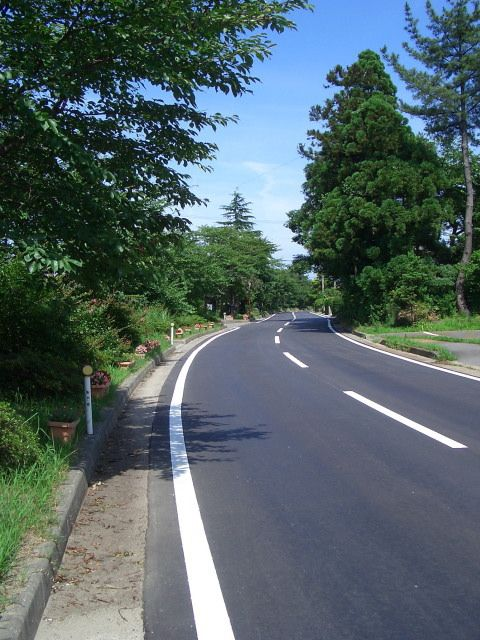

BacheAlert
Pothole reporting web app with ML filtering. Personal project, mentored through Google Developer Student Club at UTEP.
Citizens report potholes by uploading a photo. A transfer-learning classifier (MobileNetV2 in PyTorch), trained on about 680 images, reaches 95% test accuracy and rejects photos without potholes before they're stored. I exported the model to ONNX and ran it natively in Java with ONNX Runtime, behind a REST API for upload, validation, and persistence, with a vanilla HTML, CSS, and JavaScript frontend, and deployed it on Render.

- UploadThe browser sends the photo to
POST /api/clasificar - PreprocessResized to 224 × 224 and normalized like in training
- ClassifyMobileNetV2, exported to ONNX, runs inside the Java API
- DecideSoftmax gives a pothole probability; above 50% counts as a pothole
An illustration of the app’s pipeline: the messages are the app’s own, but the bar is not a real prediction. Try the real app with your own photo below.
The live app runs on a free server, so the first visit can take up to a minute to load.